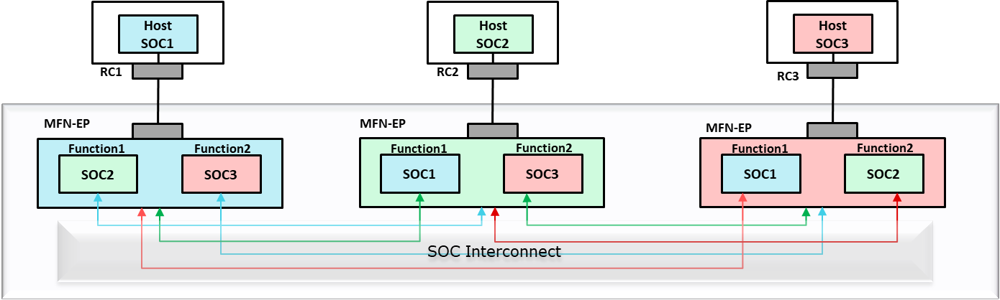
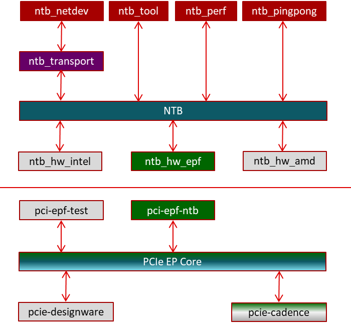

3.2.2.12. PCIe Backplane¶
Introduction
PCIe backplane allows multiple hosts with RC ports to communicate and share data with each other.
PCIe backplane is implemented using multiple instances of multi-function endpoint controller. Each host should be connected to a separate endpoint controller instance and each host will enumerate the other host as an independent function.
PCIe uses NTB (non transparent bridge) for two hosts to communicate with each other. Though J721E doesn’t have an explicit NTB controller, NTB functionality can be achieved using multiple endpoint controller instances. And for PCIe backplane (to connect more than 2 hosts), aggregation of NTB controllers can be modeled using multiple instances of multi-function endpoint controller.
In the below diagram, PCI NTB function configures the SoC with multiple PCIe Endpoint (EP) instances in such a way that transaction from one EP controller is routed to the other EP controller. Once PCI NTB function configures the SoC with multiple EP instances, HOST1 and HOST2 can communicate with each other using SoC as a bridge.
+-------------+ +-------------+
| | | |
| HOST1 | | HOST2 |
| | | |
+------^------+ +------^------+
| |
| |
+---------|-------------------------------------------------|---------+
| +------v------+ +------v------+ |
| | | | | |
| | EP | | EP | |
| | CONTROLLER1 | | CONTROLLER2 | |
| | <-----------------------------------> | |
| | | | | |
| | | | | |
| | | SoC With Multiple EP Instances | | |
| | | (Configured using NTB Function) | | |
| +-------------+ +-------------+ |
+---------------------------------------------------------------------+
NTB SW Architecture
The SW architecture for NTB both on the host side and EP side is given below. The top half is the host side NTB architecture, and the bottom half is the endpoint side NTB architecture.
Backplane Setup
The following picture shows J721E EVM connected to two DRA7 EVMs. Here the two DRA7x boards communicate with each other using J721E as backplane.

Backplane Configuration
Backplane DTS Overlay File
The following DTS overlay file configures the PCIe controller in EP mode and also contains a device tree node to create a NTB function device:
arch/arm64/boot/dts/ti/k3-j721e-pcie-backplane.dtso
In order to apply the dts overlay file, the following command should be given in u-boot prompt:
#setenv name_overlays k3-j721e-pcie-backplane.dtbo
EP Side Configuration (J721E Backplane)
Dip switch settings
Both PCIe instances should be configured in EP mode by setting PCIE_1L_MODE_SEL (switch 5) and PCIE_2L_MODE_SEL (switch 6) in sw3 to ‘1’.
8.x SDK (5.10 Kernel)
The following set of steps is required only for 5.10 Kernel
Creating pci-epf-ntb device
PCI endpoint function device can be created using the configfs. To create pci-epf-ntb device, the following commands can be used:
# mount -t configfs none /sys/kernel/config # cd /sys/kernel/config/pci_ep/ # mkdir functions/pci_epf_ntb/func1The “mkdir func1” above creates the pci-epf-ntb function device that will be probed by pci_epf_ntb driver.
The PCI endpoint framework populates the directory with the following configurable fields
# ls functions/pci_epf_ntb/func1 baseclass_code deviceid msi_interrupts pci-epf-ntb.0 progif_code secondary subsys_id vendorid cache_line_size interrupt_pin msix_interrupts primary revid subclass_code subsys_vendor_idThe PCI endpoint function driver populates these entries with default values when the device is bound to the driver. The pci-epf-ntb driver populates vendorid with 0xffff and interrupt_pin with 0x0001
# cat functions/pci_epf_ntb/func1/vendorid 0xffff # cat functions/pci_epf_ntb/func1/interrupt_pin 0x0001Configuring pci-epf-ntb Device
The user can configure the pci-epf-ntb device using its configfs entry. In order to change the vendorid and the deviceid, the following commands can be used
# echo 0x104c > functions/pci_epf_ntb/func1/vendorid # echo 0xb00d > functions/pci_epf_ntb/func1/deviceidIn order to configure NTB specific attributes, a new sub-directory to func1 should be created
# mkdir functions/pci_epf_ntb/func1/pci_epf_ntb.0/The NTB function driver will populate this directory with various attributes that can be configured by the user
# ls functions/pci_epf_ntb/func1/pci_epf_ntb.0/ db_count mw1 mw2 mw3 mw4 num_mws spad_countA sample configuration for NTB function is given below
# echo 4 > functions/pci_epf_ntb/func1/pci_epf_ntb.0/db_count # echo 128 > functions/pci_epf_ntb/func1/pci_epf_ntb.0/spad_count # echo 2 > functions/pci_epf_ntb/func1/pci_epf_ntb.0/num_mws # echo 0x100000 > functions/pci_epf_ntb/func1/pci_epf_ntb.0/mw1 # echo 0x100000 > functions/pci_epf_ntb/func1/pci_epf_ntb.0/mw2Binding pci-epf-ntb Device to EP Controller
NTB function device should be attached to two PCI endpoint controllers connected to the two hosts. Use the ‘primary’ and ‘secondary’ entries inside NTB function device to attach one PCI endpoint controller to primary interface and the other PCI endpoint controller to the secondary interface
# ln -s controllers/2900000.pcie-ep/ functions/pci-epf-ntb/func1/primary # ln -s controllers/2910000.pcie-ep/ functions/pci-epf-ntb/func1/secondaryOnce the above step is completed, both the PCI endpoint controllers are ready to establish a link with the host.
Start the Link: 7.x and 8.x SDK (5.4 and 5.10 Kernel)
In order for the endpoint device to establish a link with the host, the _start_ field should be populated with ‘1’. For NTB, both the PCI endpoint controllers should establish link with the host
# echo 1 > controllers/2900000.pcie-ep/start # echo 1 > controllers/2910000.pcie-ep/start
(PCIe2 can also be configured for NTB, but that is not tested yet).
RC Side Configuration
The hosts that have to communicate with each other can be bought up in any order after EP has been brought up. Once the host boots up, the below steps have to be done in each of the hosts.
Since the same vendor ID and device ID are used for multiple function drivers (pci-endpoint-test and ntb_hw_epf), the device should be first ubound from existing driver.
echo 0000:01:00.0 > /sys/bus/pci/devices/0000\:01\:00.0/driver/unbind
After unbinding from existing driver, it should be bound to ntb_hw_epf driver.
echo 0000:01:00.0 > /sys/bus/pci/drivers/ntb_hw_epf/bind
Then bind one of the NTB application driver. Here ntb_netdev is bound to emulate ethernet over PCIe. This will create a new ethernet interface for each of the hosts.
modprobe ntb_transport
modprobe ntb_netdev
Kernel Configs
EP Side (J721E Backplane)
CONFIG_PCI_ENDPOINT=y
CONFIG_PCI_ENDPOINT_CONFIGFS=y
CONFIG_PCI_EPF_NTB=y
CONFIG_PCI_J721E=y
CONFIG_PCIE_CADENCE=y
CONFIG_PCIE_CADENCE_EP=y
Host Side
CONFIG_PCI=y
CONFIG_PCI_MSI=y
CONFIG_NTB=m
CONFIG_NTB_EPF=m
CONFIG_NTB_TRANSPORT=m
CONFIG_NTB_NETDEV=m
RC controller configs
Additional Information
For additional information, please refer to:
<Processor_SDK_install_dir>/board-support/linux-[ver]/Documentation/PCI/endpoint/pci-test-ntb.txt